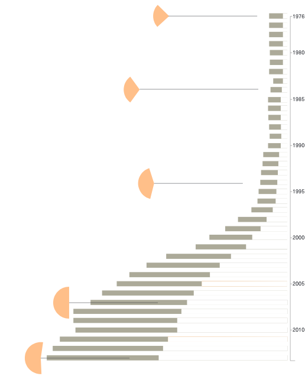

– 1960
– 1965
– 1970
– 1975
– 1980
– 1985
– 1990
– 1995
– 2000
– 2005
– 2010
– 2015
– 2020

Total population and fertility
in reation to the change of policy
in reation to the change of policy
Distribution of population density and fertility rate
Female undergraduate and graduate students(millions) and Female college students, as a proportion of all students(%)

– 1960
– 1965
– 1970
– 1975
– 1980
– 1985
– 1990
– 1995
– 2000
– 2005
– 2010
– 2015
– 2020
900
800
700
600
500
400
300
200
100
0
While it is true that many urban couples had pledged to have only one child, the one–child policy had not been strictly implemented in the rural areas (Kaufman et al. 1989). The government not only requires couples to practice birth control, but also often told them what type of contraceptive method they must use. The policy became nationwide in scope when the government announced in 1982 that women with one child must use the IUD, and couples with two children must had one partner sterilized (Wu & Walther).
This changed during the 1980s when a second birth was allowed only for daughter–only couples, and having a third birth clearly constituted a violation of family planning policy in vast rural areas of the country. A study of 4 rural counties in the late 1980s showed that 76 percent of women with one child were using IUDs, and two–thirds of the women with two children were sterilized (Kaufman et al. 1989:725). The reasons for having an abortion, first of all, is the implement of the one-child policy. For instance, when having an unexpected or unauthorized pregnancy, women were often encouraged to have an abortion rather than paying a penalty.
Second, for some women, abortion is the main contraceptive choice. Due to the limited access to contraceptive products or the lack of information about them, abortion become some women’s primary method of birth control (Wu & Walther). They believed that taking pills is more harmful than having an abortion. Besides, “there is a clear distinction between neonatal infanticide and postnatal abortion: according to one 1997 survey of more than 600 Chinese respondents regarding their attitudes toward abortion, 69 percent felt that abortion was not equivalent to killing an infant, and 73 percent felt that it was not equivalent to killing a human being” (King, 2014, pp.182).
The third is the societal preference for sons. Johnson explained the reason of son preference in her book Women, the Family, and Peasant Revolution in China (1992): Furthermore, women themselves are likely to continue to have powerful motivations for having families with sons. Not only do older women share older men’s need for sons to provide social security in old age, but the impact of traditional marriage patterns and unreformed structures on women’s position in their husband’s family and community continue to make women’s traditional uterine family very important to them. As long as women remain outsiders in their husband’s communities and families and lack significant new sources of power and prestige, they will rely on male children as an important, perhaps primary, source of status, influence, and membership in family and community.
The skewed sex ratio is one of the issues caused by the policy. Scholars argue that the abnormal sex ratio is part to sex selective abortion because of son preference after the popularization of ultrasound equipment (Zeng, 1993). That is couples would undergo an abortion if they found out the fetus is female (Hull 1990; Zeng et al., 1993). Even though “since 1986 by the PRC government to outlaw ultrasound use to reveal fetal sex, parents intent on having a son have still found ways to circumvent such prohibitions” (King,2014).
The amount of abortion related to the strictness of the policy’s execution.
– 1975
– 1980
– 1985
– 1990
– 1995
– 2000
– 2005
– 2010
– 2015
– 2020
Women in rural areas often have unmet need for family planning. “Cadres in some provinces encouraged women to have abortions because their work units would be fined if the birth quota assigned to them was exceeded (Greenhalgh 1986; Hardee–Cleveland and Banister 1988). As Tu and Smith note, which happened after 1991, under the family planning responsibility system, abortion serves as the main alternative that families can use to avoid penalties for an unplanned birth in cases of contraceptive failure, a last protection for local authorities against penalties for the failure to meet their preset demographic target, and a sensitive indicator of shifts in official family planning policy and its implementation at national and local levels. (1995:279)”
“But Rigdon (1996) points out that the extent to which coercion was used varied widely from place to place; some villagers said that they never experienced it while others have reported a variety of coercive practices.”
In the early stage of the family planning program, vasectomy (male sterilization) was promoted because of its low cost, less complicity, and efficiency. However, the amount of people chose vasectomy generally have been declining. Zhao et al. (2018) explained the failure of vasectomy’s promotion was caused by negative psychological effects due to the “limited knowledge about the procedure and the inadequate pre–operative counselling” (Zhao et al., 2018).
Zhou’s study of Chinese women’s contraceptive patterns found that the general contraceptive rate of urban women was higher than that of rural women. The IUD was the most widely chosen contraceptive method among urban women, with sterilization being second; the reverse was the case for rural women (Zhou, 1991).
The poor information often offered to women included the fact that providers tend to use national guidelines instead of health considerations for prescribing methods. They tend to recommend the IUDs for birth spacing after the first birth, and sterilization after the second birth.
In the early 70s, IUD became the primary contraception method in the family planning program (Li, 2018). The low cost is the main reason for its popularity. It has a low failure rate compared to other contraception methods. There are also advanced and “effective IUDs such as the Copper T 380A and 220C” that apeared later worldwide. “By comparison, the stainless steel ring and other first genera– tion IUDs currently used throughout China have a higher failure rate” (Li et al., 1994, pp.124). In 1992, there are estimated 90% of the IUD use is stainless steel ring. Since the government provides it for free, the impediment of widespread the more effective IUD, TCu, is its 5–6 times prices than those of the stainless steel ring (Li et al., 1994, pp.124).
Unskilled operators increased IUDs’ failure rate. A research by National Population and Family Planning Commission in 2007 shows that the rate of insufficient IUDs discontinuation placed by unskilled operators is higher. The percentage of bleeding, abdominal pain, and low back pain caused by IUD placed by someone who has been in the industry for 1 to 4 years are 5.61%, 11.11% and 24.84%, respectively. They are higher than those of more skilled operators.
“Given China’s low average education levels, especially among rural women, the tasks of family planning programs to enhance women’s contraceptive knowledge should include their awareness of their own reproductive rights” (Wu&Walther).
"Missing Women"
After publishing the third national census data in 1982, scholars worldwide started to focus on the continuing high sex ratio at birth in China. Some scholars connected that with the one–child policy, claiming that the continuing high sex ratio is caused by female infanticide. However, Wu et al. in 2005 used records from family planning departments in rural areas as resources. They concluded that sex–selective abortion (70%) is the leading cause of the skewed sex ratio at birth. Under–report takes the second, which is 20%, and female infanticide takes up 10% (Sun, 2013, pp. 100).
Since 1991, American families have adopted more than 70,000 Chinese children, most of whom are girls who have been abandoned under the “family planning” policy.
The population born outside of family planning is the focus of omissions. Because they are worried that the content of the registration will be used as a basis for fines, the survey respondents adopt a concealed attitude; the population of out–of–wedlock births is worried about the information being leaked and chooses not to report; the birth population of collective household registration, the birth population who went to other places to give birth, those who do not have a registered permanent residence, and the newborn children of migrant workers are all likely to be under–reported.
There were a certain a mount of omissions in the age 0–9.
The population of 10–19 years old age group from the sixth census (2010) can be estimated based on the population (0–9 years old) from the fifth national census (2000). However, the estimated 10-19 years old population is different from the actual population. Comparing with two data, there are 6,570 thousand male who are under-reported, and 9,660 thousand of female. In this case, there are 16,230,000 people who is between 0–9 years old missing on the census. Besides, Cui and et al. calculated the 0–9 population based on the the new born population published by the statistical bureau. The number they got is 1,689,000, which is similar to the estimated population from the fifth census (Zhuang & Liu, 2014, pp.40).